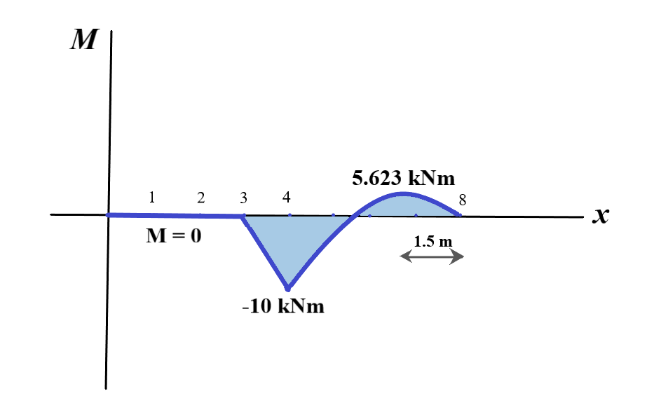

After we have found out the external recation forces, we can easily draw the bending moment diagram keeping in mind that the bending moment at the hinge and the end supports must be zero.
The first step is to solve for the hinge reactions. The hinge reactions for the following beam are shown in the 2nd figure.
Till the 3 m mark (where 10 kN force acts), there are no external forces and thus, the bending moment is zero.
From the 3m mark till C, the bending moment only balances the moment due to the 10 kN force and thus,
the value of M = - 10(x- 3) = 30 -10x where x is the distance from A.
Thus, at C, x = 4 and M = -10 kNm
From C onwards, the distribbuted force with intensity 5 kN/m starts acting and thus, M = -10(x-3) + 22.5(x-4) - 5⁄2 (x-4)2 In order to check, we use the value x = 8 and find M = 0 which tells us that out expression is correct.
Thus, the bending moment diagram for the given beam is:
Now, let's solve a problem by applying what we have learnt here: